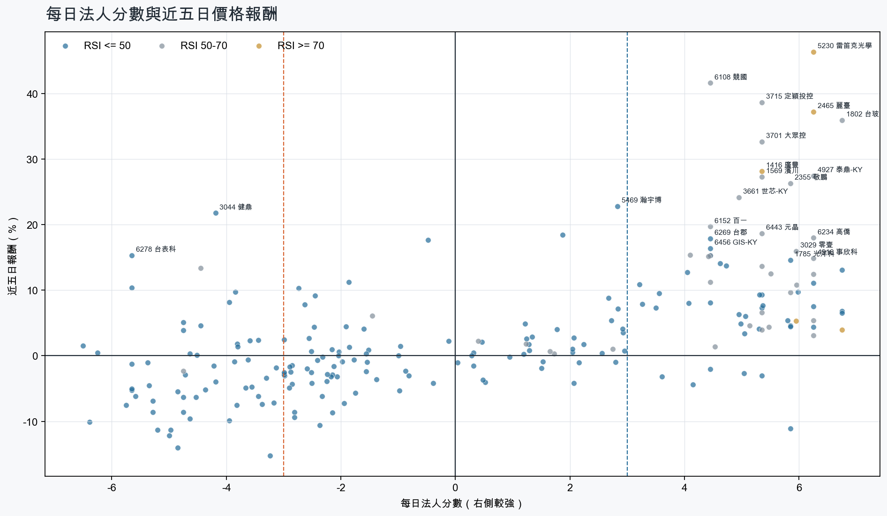
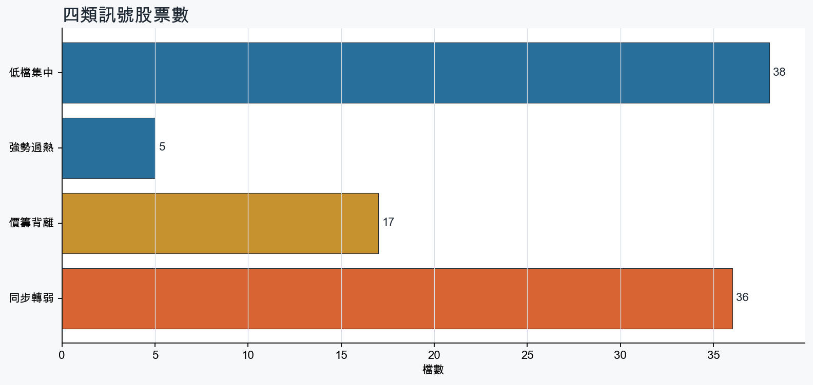
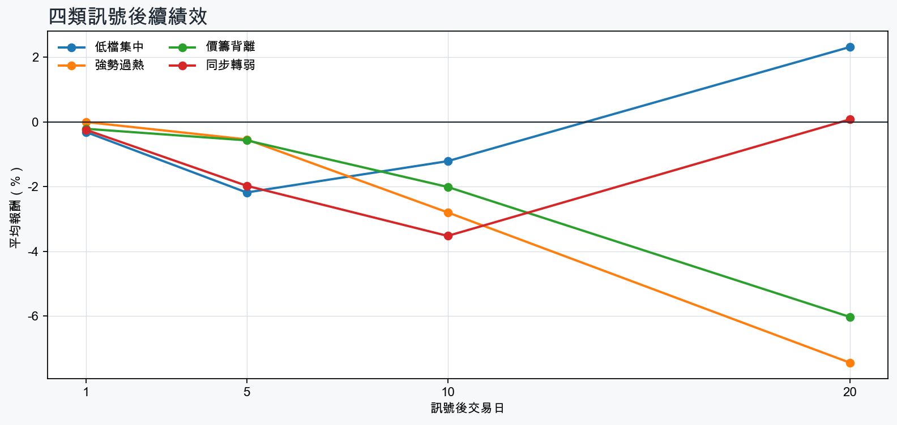

市場情緒中性分歧
近5日法人合計-2,731,137 張
篩選池上漲比例58.6%
籌碼好 / RSI低15 檔
籌碼差 / 價跌15 檔



EPS × PE VALUATION
法人常用的相對估值
顯示保守、基準與樂觀估值帶，不把單一數字包裝成精準目標價。
最新累計 EPS 依季數年化 × 同產業有效 P/E 的 Q25／中位數／Q75。排除本公司、非正 P/E，並以 1.5×IQR 排除離群值。估值帶是公開資料篩選值，不是法人目標價；未使用分析師預估 EPS。
MOOD × MONEY
情緒與籌碼雷達
熱度代表被討論程度；情緒分與法人方向分開計算。熱門不等於適合追價，樣本不足也不硬判多空。
| 股票 | 情緒 | 討論熱度 | 情緒 × 籌碼 | 情緒 × 基本面 |
|---|---|---|---|---|
| 2308 台達電價籌背離 | 中性分歧 -10.3信心 100 | 1002 篇 / 217 留言 / 3 則新聞 | 高熱分歧法人分 -3.8 | 基本面與情緒分歧基本面分 +3.6 |
| 3189 景碩同步轉弱 | 情緒低迷 -35.1信心 100 | 863 篇 / 86 留言 / 3 則新聞 | 情籌雙弱法人分 -4.0 | 基本面佳、情緒悲觀基本面分 +3.6 |
| 1815 富喬低檔集中 | 情緒高漲 +87.0信心 100 | 863 篇 / 84 留言 / 3 則新聞 | 情籌共振法人分 +4.0 | 基本面與情緒共振基本面分 +2.0 |
| 6770 力積電價籌背離 | 中性分歧 -0.4信心 70 | 741 篇 / 42 留言 / 3 則新聞 | 高熱分歧法人分 -3.4 | 基本面與情緒分歧基本面分 +2.0 |
| 1605 華新價籌背離 | 偏空 -16.0信心 74 | 711 篇 / 34 留言 / 3 則新聞 | 情籌混合法人分 -3.8 | 基本面與情緒分歧基本面分 +2.4 |
| 8112 至上低檔集中 | 偏多 +23.9信心 55 | 671 篇 / 27 留言 / 2 則新聞 | 情籌共振法人分 +3.5 | 基本面與情緒共振基本面分 +3.0 |
| 3044 健鼎價籌背離 | 偏多 +25.9信心 60 | 641 篇 / 18 留言 / 3 則新聞 | 熱門但法人撤退法人分 -4.2 | 基本面與情緒共振基本面分 +3.6 |
| 3167 大量低檔集中 | 偏多 +34.4信心 61 | 621 篇 / 13 留言 / 3 則新聞 | 情籌共振法人分 +6.8 | 基本面與情緒共振基本面分 +3.6 |
| 6274 台燿同步轉弱 | 中性分歧 +0.0信心 56 | 601 篇 / 11 留言 / 3 則新聞 | 情籌混合法人分 -3.7 | 基本面與情緒分歧基本面分 +3.6 |
| 2356 英業達同步轉弱 | 偏多 +29.7信心 30 | 420 篇 / 0 留言 / 3 則新聞 | 熱門但法人撤退法人分 -3.2 | 基本面與情緒共振基本面分 +3.0 |
| 2347 聯強同步轉弱 | 偏多 +29.7信心 30 | 420 篇 / 0 留言 / 3 則新聞 | 熱門但法人撤退法人分 -5.0 | 基本面與情緒共振基本面分 +3.0 |
| 2103 台橡同步轉弱 | 中性分歧 +0.0信心 30 | 420 篇 / 0 留言 / 3 則新聞 | 情籌混合法人分 -4.6 | 基本面與情緒分歧基本面分 +3.0 |
01
籌碼好 / RSI低
優先研究基本面；法人續買且價格止穩時，才適合分批觀察。
| 股票 / 確認狀態 | 每日法人分 | 浦男式近似 | 法人加速度 | RSI / 相對強弱 | 量價確認 | 融資融券 | 每週集保確認 | 基本面 | EPS × 同業 P/E 估值 | 情緒 / 情籌 | 近期消息 | 論壇討論 |
|---|---|---|---|---|---|---|---|---|---|---|---|---|
| 2034 允強可研究 · 100 分籌碼與價格確認，可列研究清單 | +6.0法人 +4,276 張 / 5 天 | 命中 · 100站上月線；中期均線偏多；法人籌碼偏多 | +3,879 張近3日 +4,078 / 連續 +10 日 | 48.5相對大盤 +12.8% | 量比 1.87確認分 +6.5價格、量能與籌碼未見明顯弱項 | -%融資 - 張 / 融券 - 張 | +1.10 pp1000張 +0.74 pp | 單月營收年增 +99.8%；累計營收年增 +11.4%；2026 Q3 累計 EPS 0.542026 Q3 累計營益率 4.8%來源：公開資訊觀測站 | 基準 NT$ 8.10估值帶 6.96–10.65現價 24.15 · 高於估值帶 · 距基準 -66.5%2026 Q3 累計 EPS 0.54 → 年化 0.72鋼鐵工業同業 P/E 9.66／11.25／14.79 · n=30 · 信心較高以 Q3 累計 EPS 年化，不等同分析師全年預估來源：TWSE／TPEx 每日本益比 | 樣本不足 +0.0熱度 0 / 信心 0情緒樣本不足 | 近期沒有通過股票語境篩選的新聞 | 近期沒有明確提及本股的論壇樣本 |
| 5426 振發可研究 · 100 分籌碼與價格確認，可列研究清單 | +6.2法人 +2,490 張 / 5 天 | 命中 · 100站上月線；中期均線偏多；法人籌碼偏多 | +2,436 張近3日 +2,078 / 連續 +5 日 | 49.5相對大盤 +15.9% | 量比 0.96確認分 +7.1價格、量能與籌碼未見明顯弱項 | -3.6%融資 -124 張 / 融券 +8 張 | -0.54 pp1000張 -0.83 pp | 單月營收年增 +30.1%；累計營收年增 +22.3%；2026 Q3 累計 EPS 0.72仍需觀察下一期財報延續性來源：公開資訊觀測站 | 基準 NT$ 13.49估值帶 10.42–16.61現價 30.05 · 高於估值帶 · 距基準 -55.1%2026 Q3 累計 EPS 0.72 → 年化 0.96電腦及週邊同業 P/E 10.85／14.05／17.30 · n=79 · 信心較高以 Q3 累計 EPS 年化，不等同分析師全年預估來源：TWSE／TPEx 每日本益比 | 樣本不足 +0.0熱度 25 / 信心 10情緒樣本不足 | 【10:55 即時新聞】振發(5426)攻上漲停，AI伺服器機殼題材發酵CMoney投資網誌 · 11/12 | 近期沒有明確提及本股的論壇樣本 |
| 4720 德淵可研究 · 100 分籌碼與價格確認，可列研究清單 | +5.3法人 +4,965 張 / 4 天 | 命中 · 100站上月線；中期均線偏多；法人籌碼偏多 | +5,347 張近3日 +4,083 / 連續 +3 日 | 46.2相對大盤 +23.4% | 量比 1.09確認分 +6.5價格、量能與籌碼未見明顯弱項 | -%融資 - 張 / 融券 - 張 | +1.35 pp1000張 +2.52 pp | 單月營收年增 +15.7%；累計營收年增 +16.3%仍需觀察下一期財報延續性來源：公開資訊觀測站 | 不適用最新財報缺少可年化 EPS | 樣本不足 +0.0熱度 25 / 信心 10情緒樣本不足 | 【09:34 即時新聞】德淵(4720) 攻上漲停，低貝他防禦題材成盤中焦點CMoney投資網誌 · 11/12 | 近期沒有明確提及本股的論壇樣本 |
| 5475 德宏可研究 · 100 分籌碼與價格確認，可列研究清單 | +4.5法人 +2,608 張 / 3 天 | 命中 · 95站上月線；中期均線偏多；法人籌碼偏多 | +860 張近3日 +1,679 / 連續 +2 日 | 48.5相對大盤 +2.3% | 量比 2.07確認分 +5.1價格、量能與籌碼未見明顯弱項 | -%融資 +0 張 / 融券 +0 張 | +1.08 pp1000張 +1.75 pp | 單月營收年增 +388.1%；累計營收年增 +201.8%仍需觀察下一期財報延續性來源：公開資訊觀測站 | 不適用最新財報缺少可年化 EPS | 偏多 +29.7熱度 42 / 信心 30情籌共振 | 熱門股／玻纖布續強！德宏10月營收創高與台玻、富喬同衝漲停| 產經非凡新聞台 · 11/12玻纖布剩1檔獨撐！「龍頭廠」前三季EPS 1.57元轉虧為盈、盤中拉第4根漲停德宏、建榮、富喬齊跌1%FTNN 新聞網 · 11/12 | 近期沒有明確提及本股的論壇樣本 |
| 5388 中磊等待確認 · 94 分籌碼有訊號，但價格尚未確認 | +6.8法人 +3,070 張 / 5 天 | 接近 · 76法人籌碼偏多；法人買盤加速；買超具延續性；留意未站月線、中期均線未翻多 | +2,114 張近3日 +2,630 / 連續 +6 日 | 40.7相對大盤 +4.2% | 量比 1.04確認分 +2.0收盤跌破20日線；20日線低於60日線 | -%融資 - 張 / 融券 - 張 | -0.23 pp1000張 -1.46 pp | 單月營收年增 +63.6%；累計營收年增 +55.2%；2026 Q3 累計 EPS 4.342026 Q3 累計營益率 3.4%來源：公開資訊觀測站 | 基準 NT$ 119.4估值帶 77.89–216.2現價 70.20 · 低於估值帶 · 距基準 +70.1%2026 Q3 累計 EPS 4.34 → 年化 5.79通信網路同業 P/E 13.46／20.64／37.37 · n=60 · 信心較高以 Q3 累計 EPS 年化，不等同分析師全年預估來源：TWSE／TPEx 每日本益比 | 偏多 +29.7熱度 42 / 信心 30情籌共振 | 中磊前三季EPS 4.34元賺贏去年全年 AI帶動電信商升級需求鉅亨網 · 11/10中磊前三季每股賺4.34元 超車去年全年 股價單日勁揚近7%BigGo 財經 · 11/11 | 近期沒有明確提及本股的論壇樣本 |
| 3167 大量可研究 · 94 分籌碼與價格確認，可列研究清單 | +6.8法人 +3,048 張 / 5 天 | 接近 · 80中期均線偏多；法人籌碼偏多；法人買盤加速；留意未站月線、量能尚未確認 | +1,587 張近3日 +2,042 / 連續 +5 日 | 46.8相對大盤 +2.4% | 量比 2.79確認分 +2.4收盤跌破20日線 | -%融資 - 張 / 融券 - 張 | -2.14 pp1000張 -2.06 pp | 單月營收年增 +174.9%；累計營收年增 +144.5%；2026 Q3 累計 EPS 19.24仍需觀察下一期財報延續性來源：公開資訊觀測站 | 基準 NT$ 487.7估值帶 332.2–689.8現價 879.0 · 高於估值帶 · 距基準 -44.5%2026 Q3 累計 EPS 19.24 → 年化 25.65電機機械同業 P/E 12.95／19.01／26.89 · n=73 · 信心較高以 Q3 累計 EPS 年化，不等同分析師全年預估來源：TWSE／TPEx 每日本益比 | 偏多 +34.4熱度 62 / 信心 61情籌共振 | 大量法說／第三季EPS 9.94元創高、毛利率突破5成，高階CCD機台與TM4訂單延伸至明年，半導體設備同步推進｜股市話題永豐金證券 · 11/11和碩Q3獲利滑ASIC已有客戶明年大量出貨| 科技非凡新聞台 · 11/12 | [情報] 3167大量Q3PTT Stock · 11-11 · 13 留言 |
| 4716 大立等待確認 · 99 分先等基本面止穩 | +6.2法人 +2,687 張 / 5 天 | 接近 · 75站上月線；中期均線偏多；法人籌碼偏多；留意量能異常、基本面偏弱 | +2,768 張近3日 +2,473 / 連續 +5 日 | 49.4相對大盤 +13.7% | 量比 3.03確認分 +5.3價格、量能與籌碼未見明顯弱項 | +0.5%融資 +58 張 / 融券 +109 張 | +3.84 pp1000張 +1.79 pp | 尚無明確成長訊號單月營收年增 -16.2%；累計營收年增 -1.9%；2026 Q3 累計 EPS -0.07來源：公開資訊觀測站 | 不適用年化 EPS 非正數，不適合使用本益比估值 | 中性分歧 +0.0熱度 36 / 信心 20情籌混合 | 光電股多檔飆漲停！玉晶光亮燈大立光漲逾7% 分析師提醒別追高Yahoo股市 · 11/10【10:31 即時新聞】大立(4716)攻上漲停，短線買盤點火化工電子材料題材CMoney投資網誌 · 11/12 | 近期沒有明確提及本股的論壇樣本 |
| 3605 宏致等待確認 · 79 分籌碼有訊號，但價格尚未確認 | +5.8法人 +5,535 張 / 4 天 | 接近 · 65中期均線偏多；法人籌碼偏多；法人買盤加速；留意未站月線、明顯弱於大盤 | +4,236 張近3日 +4,393 / 連續 +1 日 | 32.9相對大盤 -20.7% | 量比 1.25確認分 -1.0收盤跌破20日線；近20日弱於大盤 | -%融資 - 張 / 融券 - 張 | +1.19 pp1000張 +2.26 pp | 單月營收年增 +19.0%；累計營收年增 +17.9%；2026 Q3 累計 EPS 3.312026 Q3 累計營益率 6.9%來源：公開資訊觀測站 | 基準 NT$ 91.13估值帶 64.08–133.3現價 128.0 · 估值帶內 · 距基準 -28.8%2026 Q3 累計 EPS 3.31 → 年化 4.41電子零組件同業 P/E 14.52／20.65／30.21 · n=139 · 信心較高以 Q3 累計 EPS 年化，不等同分析師全年預估來源：TWSE／TPEx 每日本益比 | 偏多 +19.8熱度 36 / 信心 20情籌混合 | 3605 宏致- Bloom Energy 擴產帶動商機，康舒、高力、宏致10 月營收齊揚- 股市爆料同學會CMoney · 11/11【12:26 即時新聞】宏致(3605)亮燈漲停，市場聚焦短線跌深反彈CMoney投資網誌 · 11/10 | 近期沒有明確提及本股的論壇樣本 |
| 1809 中釉等待確認 · 94 分先等基本面止穩 | +5.8法人 +3,128 張 / 4 天 | 接近 · 71中期均線偏多；法人籌碼偏多；法人買盤加速；留意未站月線、基本面偏弱 | +1,650 張近3日 +2,098 / 連續 +1 日 | 43.9相對大盤 +9.8% | 量比 1.09確認分 +4.5收盤跌破20日線 | -%融資 - 張 / 融券 - 張 | +0.03 pp1000張 +0.00 pp | 尚無明確成長訊號單月營收年增 -3.3%；累計營收年增 -1.2%來源：公開資訊觀測站 | 不適用最新財報缺少可年化 EPS | 樣本不足 +0.0熱度 25 / 信心 10情緒樣本不足 | 【13:09 即時新聞】中釉(1809) 攻上漲停，玻陶族群續強受關注CMoney投資網誌 · 11/09 | 近期沒有明確提及本股的論壇樣本 |
| 4903 聯光通等待確認 · 81 分籌碼有訊號，但價格尚未確認 | +4.5法人 +2,248 張 / 3 天 | 接近 · 69中期均線偏多；法人籌碼偏多；法人買盤加速；留意未站月線、相對強度普通 | +766 張近3日 +1,424 / 連續 -2 日 | 49.1相對大盤 -0.1% | 量比 0.56確認分 +1.1收盤跌破20日線；成交量不足 | +1.8%融資 +80 張 / 融券 +25 張 | -0.01 pp1000張 +1.20 pp | 單月營收年增 +66.7%；累計營收年增 +25.7%；2026 Q3 累計 EPS 0.372026 Q3 累計營益率 2.6%來源：公開資訊觀測站 | 基準 NT$ 9.78估值帶 6.61–16.61現價 48.00 · 高於估值帶 · 距基準 -79.6%2026 Q3 累計 EPS 0.37 → 年化 0.49通信網路同業 P/E 13.40／19.82／33.68 · n=60 · 信心較高以 Q3 累計 EPS 年化，不等同分析師全年預估來源：TWSE／TPEx 每日本益比 | 樣本不足 +0.0熱度 0 / 信心 0情緒樣本不足 | 近期沒有通過股票語境篩選的新聞 | 近期沒有明確提及本股的論壇樣本 |
| 8112 至上等待確認 · 83 分籌碼有訊號，但價格尚未確認 | +3.5法人 +3,610 張 / 3 天 | 接近 · 76法人籌碼偏多；法人買盤加速；買超具延續性；留意未站月線、中期均線未翻多 | +1,310 張近3日 +2,080 / 連續 -1 日 | 43.8相對大盤 +5.5% | 量比 1.28確認分 +2.4收盤跌破20日線；20日線低於60日線 | -%融資 - 張 / 融券 - 張 | -0.54 pp1000張 -0.89 pp | 單月營收年增 +204.3%；累計營收年增 +186.5%；2026 Q3 累計 EPS 17.452026 Q3 累計營益率 3.4%來源：公開資訊觀測站 | 基準 NT$ 223.8估值帶 181.5–313.6現價 80.60 · 低於估值帶 · 距基準 +177.7%2026 Q3 累計 EPS 17.45 → 年化 23.27電子通路同業 P/E 7.80／9.62／13.48 · n=28 · 信心較高以 Q3 累計 EPS 年化，不等同分析師全年預估來源：TWSE／TPEx 每日本益比 | 偏多 +23.9熱度 67 / 信心 55情籌共振 | 營收速報 - 至上(8112)10月營收537.55億元年增率高達204.31％｜新聞快訊｜豐雲學堂永豐金證券 · 11/10【12:50 即時新聞】至上(8112) 股價走強，記憶體營收成長成盤中焦點CMoney投資網誌 · 11/11 | [情報] 8112 至上 Q3 EPS 7.88 前三季 17.45PTT Stock · 11-10 · 27 留言 |
| 6244 茂迪可研究 · 92 分籌碼與價格確認，可列研究清單 | +5.3法人 +4,396 張 / 4 天 | 接近 · 86站上月線；法人籌碼偏多；法人買盤加速；留意中期均線未翻多 | +3,644 張近3日 +1,555 / 連續 +1 日 | 50.0相對大盤 +5.9% | 量比 1.47確認分 +4.520日線低於60日線 | +2.1%融資 +257 張 / 融券 -66 張 | -2.65 pp1000張 -2.86 pp | 單月營收年增 +0.4%；累計營收年增 +11.0%仍需觀察下一期財報延續性來源：公開資訊觀測站 | 不適用最新財報缺少可年化 EPS | 樣本不足 +0.0熱度 25 / 信心 10情緒樣本不足 | 6244 茂迪 - 噴起來 革命軍人 - 股市爆料同學會CMoney · 11/12 | 近期沒有明確提及本股的論壇樣本 |
| 1815 富喬可研究 · 95 分籌碼與價格確認，可列研究清單 | +4.0法人 +22,454 張 / 2 天 | 命中 · 95站上月線；中期均線偏多；法人籌碼偏多；留意買超延續不足 | +25,661 張近3日 +15,684 / 連續 -1 日 | 49.1相對大盤 +13.1% | 量比 2.04確認分 +6.5價格、量能與籌碼未見明顯弱項 | +0.7%融資 +393 張 / 融券 +2,097 張 | -6.17 pp1000張 -7.05 pp | 單月營收年增 +85.6%；累計營收年增 +58.4%仍需觀察下一期財報延續性來源：公開資訊觀測站 | 不適用最新財報缺少可年化 EPS | 情緒高漲 +87.0熱度 86 / 信心 100情籌共振 | 熱門股》訂單爆滿 富喬直奔漲停自由財經 · 11/12玻纖布帶頭衝！南亞噴7% 台玻、富喬爆量攻漲停Yahoo股市 · 11/11 | [新聞] 韭菜翻車連環爆！景碩、聯亞、富喬爆違約PTT Stock · 11-10 · 30 留言[情報] 1109 違約交割 富喬、聯亞PTT Stock · 11-09 · 29 留言 |
| 2328 廣宇等待確認 · 74 分籌碼有訊號，但價格尚未確認 | +3.6法人 +4,100 張 / 3 天 | 接近 · 68中期均線偏多；法人籌碼偏多；法人買盤加速；留意未站月線、量能異常 | +5,804 張近3日 +2,089 / 連續 +1 日 | 37.2相對大盤 +3.2% | 量比 0.53確認分 +0.5收盤跌破20日線；成交量不足 | -%融資 - 張 / 融券 - 張 | +3.36 pp1000張 +2.72 pp | 單月營收年增 +27.8%累計營收年增 -0.7%來源：公開資訊觀測站 | 不適用最新財報缺少可年化 EPS | 樣本不足 +0.0熱度 0 / 信心 0情緒樣本不足 | 近期沒有通過股票語境篩選的新聞 | 近期沒有明確提及本股的論壇樣本 |
| 6269 台郡等待確認 · 92 分先等基本面止穩 | +4.5法人 +10,673 張 / 3 天 | 接近 · 80站上月線；中期均線偏多；法人籌碼偏多；留意量能尚未確認、基本面偏弱 | +12,343 張近3日 +10,389 / 連續 +1 日 | 47.5相對大盤 +23.5% | 量比 0.83確認分 +5.8價格、量能與籌碼未見明顯弱項 | -%融資 - 張 / 融券 - 張 | -0.33 pp1000張 +0.04 pp | 單月營收年增 +4.5%；累計營收年增 +1.7%2026 Q3 累計 EPS -4.83；2026 Q3 累計營益率 -11.6%來源：公開資訊觀測站 | 不適用年化 EPS 非正數，不適合使用本益比估值 | 中性分歧 +0.0熱度 36 / 信心 20情籌混合 | 6269 台郡 - 9635慶豐富，前3季賺1.87，股價19.7 - 股市爆料同學會CMoney · 11/126269 台郡 - 扯 早上我券商融券還有400多張 現在一看剩12張 - 股市爆料同學會CMoney · 11/12 | 近期沒有明確提及本股的論壇樣本 |
02
籌碼好 / RSI高
趨勢強但不追價，等待量縮、RSI降溫或回測支撐。
| 股票 / 確認狀態 | 每日法人分 | 浦男式近似 | 法人加速度 | RSI / 相對強弱 | 量價確認 | 融資融券 | 每週集保確認 | 基本面 | EPS × 同業 P/E 估值 | 情緒 / 情籌 | 近期消息 | 論壇討論 |
|---|---|---|---|---|---|---|---|---|---|---|---|---|
| 2618 長榮航等待拉回 · 100 分等拉回，不追價 | +6.8法人 +65,750 張 / 5 天 | 命中 · 96站上月線；中期均線偏多；法人籌碼偏多；留意動能位置非最佳 | +20,658 張近3日 +52,376 / 連續 +10 日 | 72.8相對大盤 +18.9% | 量比 1.00確認分 +6.5價格、量能與籌碼未見明顯弱項 | -%融資 - 張 / 融券 - 張 | +1.75 pp1000張 +1.80 pp | 單月營收年增 +22.6%；累計營收年增 +19.8%；2026 Q3 累計 EPS 3.50仍需觀察下一期財報延續性來源：公開資訊觀測站 | 基準 NT$ 45.64估值帶 37.57–63.23現價 46.90 · 估值帶內 · 距基準 -2.7%2026 Q3 累計 EPS 3.50 → 年化 4.67航運業同業 P/E 8.05／9.78／13.55 · n=26 · 信心較高以 Q3 累計 EPS 年化，不等同分析師全年預估來源：TWSE／TPEx 每日本益比 | 偏多 +29.7熱度 42 / 信心 30情籌共振 | 星宇10月營收創高仍虧6.38億！長榮航、華航大賺 航空三雄獲利兩樣情Yahoo股市 · 11/11華航、長榮航 Q4獲利可期中時新聞網 · 11/12 | 近期沒有明確提及本股的論壇樣本 |
| 2465 麗臺等待拉回 · 100 分等拉回，不追價 | +6.2法人 +6,899 張 / 5 天 | 接近 · 85站上月線；中期均線偏多；法人籌碼偏多；留意量能尚未確認、RSI過熱 | +5,128 張近3日 +6,214 / 連續 +6 日 | 78.6相對大盤 +102.7% | 量比 0.86確認分 +5.8價格、量能與籌碼未見明顯弱項 | -%融資 - 張 / 融券 - 張 | +7.25 pp1000張 +1.18 pp | 單月營收年增 +340.6%；累計營收年增 +125.2%；2026 Q3 累計 EPS 6.82仍需觀察下一期財報延續性來源：公開資訊觀測站 | 基準 NT$ 127.8估值帶 98.66–157.3現價 164.0 · 高於估值帶 · 距基準 -22.1%2026 Q3 累計 EPS 6.82 → 年化 9.09電腦及週邊同業 P/E 10.85／14.05／17.30 · n=79 · 信心較高以 Q3 累計 EPS 年化，不等同分析師全年預估來源：TWSE／TPEx 每日本益比 | 中性分歧 +0.0熱度 36 / 信心 20情籌混合 | 11／12台股雷達｜GIS-KY、定穎投控、麗臺題材點火原因一次看- 證券工商時報 · 11/12【12:41 即時新聞】麗臺(2465)漲近一成走強，AI工作站題材續成焦點CMoney投資網誌 · 11/12 | 近期沒有明確提及本股的論壇樣本 |
| 2610 華航等待拉回 · 100 分等拉回，不追價 | +6.0法人 +117,747 張 / 5 天 | 命中 · 96站上月線；中期均線偏多；法人籌碼偏多；留意動能位置非最佳 | +24,663 張近3日 +95,528 / 連續 +9 日 | 70.2相對大盤 +21.3% | 量比 1.60確認分 +6.5價格、量能與籌碼未見明顯弱項 | -%融資 - 張 / 融券 - 張 | +2.01 pp1000張 +2.09 pp | 單月營收年增 +22.4%；累計營收年增 +20.2%；2026 Q3 累計 EPS 1.80仍需觀察下一期財報延續性來源：公開資訊觀測站 | 基準 NT$ 23.47估值帶 19.32–32.52現價 22.80 · 估值帶內 · 距基準 +3.0%2026 Q3 累計 EPS 1.80 → 年化 2.40航運業同業 P/E 8.05／9.78／13.55 · n=26 · 信心較高以 Q3 累計 EPS 年化，不等同分析師全年預估來源：TWSE／TPEx 每日本益比 | 偏多 +29.7熱度 42 / 信心 30情籌共振 | 油價漲也擋不住！華航前三季營收創歷年同期新高，長程線載客率破9成喜迎交機潮遠見雜誌 · 11/12星宇10月營收創高仍虧6.38億！長榮航、華航大賺 航空三雄獲利兩樣情Yahoo股市 · 11/11 | 近期沒有明確提及本股的論壇樣本 |
| 1416 廣豐等待拉回 · 100 分等拉回，不追價 | +5.3法人 +5,600 張 / 4 天 | 接近 · 85站上月線；中期均線偏多；法人籌碼偏多；留意量能尚未確認、RSI過熱 | +1,461 張近3日 +4,149 / 連續 -1 日 | 82.7相對大盤 +57.2% | 量比 2.73確認分 +5.8價格、量能與籌碼未見明顯弱項 | -%融資 - 張 / 融券 - 張 | +2.92 pp1000張 +2.29 pp | 單月營收年增 +45.5%；累計營收年增 +47.3%仍需觀察下一期財報延續性來源：公開資訊觀測站 | 不適用最新財報缺少可年化 EPS | 偏多 +19.8熱度 36 / 信心 20情籌混合 | 廣豐(1416)受惠數位科技驅動成長，股價創高-朱家泓X林穎CMoney投資網誌 · 11/12財報：廣豐(1416)115/1/1～115/9/30歸屬母公司淨利1億8457萬元，EPS 1.00元富聯網 · 11/12 | 近期沒有明確提及本股的論壇樣本 |
| 5230 雷笛克光學等待拉回 · 100 分等拉回，不追價 | +6.2法人 +3,799 張 / 5 天 | 命中 · 91站上月線；中期均線偏多；法人籌碼偏多；留意量能尚未確認、動能位置非最佳 | +2,564 張近3日 +3,206 / 連續 +6 日 | 77.4相對大盤 +33.8% | 量比 0.79確認分 +5.2融資單日增幅偏高 | +7.7%融資 +144 張 / 融券 +13 張 | -3.18 pp1000張 +0.00 pp | 單月營收年增 +22.7%；累計營收年增 +11.5%仍需觀察下一期財報延續性來源：公開資訊觀測站 | 不適用最新財報缺少可年化 EPS | 中性分歧 +0.0熱度 42 / 信心 30情籌混合 | 【11:51 即時新聞】雷笛克光學(5230) 股價攻漲停，低Beta防禦題材成盤中焦點CMoney投資網誌 · 11/12【09:58 即時新聞】雷笛克光學(5230) 亮燈漲停，低β防禦題材獲關注CMoney投資網誌 · 11/11 | 近期沒有明確提及本股的論壇樣本 |
03
籌碼差 / 股價上漲
可能是事件行情或軋空；沒有籌碼改善前避免追高。
| 股票 / 確認狀態 | 每日法人分 | 浦男式近似 | 法人加速度 | RSI / 相對強弱 | 量價確認 | 融資融券 | 每週集保確認 | 基本面 | EPS × 同業 P/E 估值 | 情緒 / 情籌 | 近期消息 | 論壇討論 |
|---|---|---|---|---|---|---|---|---|---|---|---|---|
| 3044 健鼎風險警示 · 49 分背離警戒，避免追高 | -4.2法人 -2,159 張 / 0 天 | 接近 · 61站上月線；中期均線偏多；法人買盤加速；留意法人籌碼偏弱、買超延續不足 | +20 張近3日 -1,210 / 連續 -10 日 | 46.7相對大盤 -0.6% | 量比 3.36確認分 +1.2價格、量能與籌碼未見明顯弱項 | -%融資 - 張 / 融券 - 張 | -0.04 pp1000張 -0.32 pp | 單月營收年增 +70.3%；累計營收年增 +43.7%；2026 Q3 累計 EPS 24.95仍需觀察下一期財報延續性來源：公開資訊觀測站 | 基準 NT$ 692.6估值帶 483.0–1,031現價 534.0 · 估值帶內 · 距基準 +29.7%2026 Q3 累計 EPS 24.95 → 年化 33.27電子零組件同業 P/E 14.52／20.82／30.98 · n=139 · 信心較高以 Q3 累計 EPS 年化，不等同分析師全年預估來源：TWSE／TPEx 每日本益比 | 偏多 +25.9熱度 64 / 信心 60熱門但法人撤退 | 【09:04 即時新聞】健鼎(3044)亮燈漲停領漲PCB族群CMoney投資網誌 · 11/12【即時新聞】今日最新！健鼎受惠伺服器需求爆發第三季大賺11.94元，單季營收飆破300億大關CMoney投資網誌 · 11/11 | [情報] 3044 健鼎 2026 Q3 11.93PTT Stock · 11-10 · 18 留言 |
| 8150 南茂風險警示 · 19 分背離警戒，避免追高 | -5.7法人 -7,146 張 / 1 天 | 未命中 · 43法人買盤加速；量價健康；基本面有支撐；留意未站月線、中期均線未翻多 | +692 張近3日 -5,558 / 連續 -1 日 | 40.1相對大盤 -17.4% | 量比 2.01確認分 -1.8收盤跌破20日線；20日線低於60日線；近20日弱於大盤 | -%融資 - 張 / 融券 - 張 | -8.12 pp1000張 -7.57 pp | 單月營收年增 +30.9%；累計營收年增 +30.5%；2026 Q3 累計 EPS 3.89仍需觀察下一期財報延續性來源：公開資訊觀測站 | 基準 NT$ 111.3估值帶 70.38–178.1現價 83.90 · 估值帶內 · 距基準 +32.7%2026 Q3 累計 EPS 3.89 → 年化 5.19半導體同業 P/E 13.57／21.46／34.33 · n=155 · 信心較高以 Q3 累計 EPS 年化，不等同分析師全年預估來源：TWSE／TPEx 每日本益比 | 樣本不足 +0.0熱度 25 / 信心 10情緒樣本不足 | 續吹反攻號！南茂財報有喜瑞銀看好股價衝上三位數- 證券工商時報 · 11/12 | 近期沒有明確提及本股的論壇樣本 |
| 3209 全科風險警示 · 42 分背離警戒，避免追高 | -4.5法人 -2,675 張 / 2 天 | 未命中 · 55站上月線；明顯強於大盤；基本面有支撐；留意中期均線未翻多、法人籌碼偏弱 | -1,933 張近3日 -2,342 / 連續 +1 日 | 57.8相對大盤 +11.1% | 量比 3.31確認分 +1.420日線低於60日線；法人買盤減速 | -%融資 - 張 / 融券 - 張 | -0.83 pp1000張 -1.41 pp | 單月營收年增 +169.4%；累計營收年增 +62.4%仍需觀察下一期財報延續性來源：公開資訊觀測站 | 不適用最新財報缺少可年化 EPS | 樣本不足 +0.0熱度 0 / 信心 0情緒樣本不足 | 近期沒有通過股票語境篩選的新聞 | 近期沒有明確提及本股的論壇樣本 |
| 6278 台表科風險警示 · 24 分背離警戒，避免追高 | -5.7法人 -9,188 張 / 1 天 | 未命中 · 40中期均線偏多；量價健康；基本面有支撐；留意未站月線、法人籌碼偏弱 | -8,336 張近3日 -8,603 / 連續 -4 日 | 34.1相對大盤 -9.8% | 量比 1.15確認分 -3.5收盤跌破20日線；近20日弱於大盤；法人買盤減速 | -%融資 - 張 / 融券 - 張 | +4.40 pp1000張 +6.00 pp | 單月營收年增 +25.2%；累計營收年增 +8.3%；2026 Q3 累計 EPS 8.312026 Q3 累計營益率 6.9%來源：公開資訊觀測站 | 基準 NT$ 265.9估值帶 136.9–368.9現價 230.0 · 估值帶內 · 距基準 +15.6%2026 Q3 累計 EPS 8.31 → 年化 11.08光電同業 P/E 12.36／24.00／33.29 · n=71 · 信心較高以 Q3 累計 EPS 年化，不等同分析師全年預估來源：TWSE／TPEx 每日本益比 | 樣本不足 +0.0熱度 0 / 信心 0情緒樣本不足 | 近期沒有通過股票語境篩選的新聞 | 近期沒有明確提及本股的論壇樣本 |
| 3624 光頡風險警示 · 27 分背離警戒，避免追高 | -4.0法人 -1,978 張 / 2 天 | 未命中 · 53中期均線偏多；法人買盤加速；量價健康；留意未站月線、法人籌碼偏弱 | +3,337 張近3日 +1,014 / 連續 -2 日 | 36.0相對大盤 -21.4% | 量比 1.18確認分 -1.6收盤跌破20日線；近20日弱於大盤；融資單日增幅偏高 | +9.9%融資 +664 張 / 融券 +71 張 | -8.98 pp1000張 -9.12 pp | 單月營收年增 +73.1%；累計營收年增 +38.5%；2026 Q3 累計 EPS 3.79仍需觀察下一期財報延續性來源：公開資訊觀測站 | 基準 NT$ 104.3估值帶 73.37–156.6現價 112.5 · 估值帶內 · 距基準 -7.2%2026 Q3 累計 EPS 3.79 → 年化 5.05電子零組件同業 P/E 14.52／20.65／30.98 · n=139 · 信心較高以 Q3 累計 EPS 年化，不等同分析師全年預估來源：TWSE／TPEx 每日本益比 | 樣本不足 +0.0熱度 0 / 信心 0情緒樣本不足 | 近期沒有通過股票語境篩選的新聞 | 近期沒有明確提及本股的論壇樣本 |
| 2308 台達電風險警示 · 28 分背離警戒，避免追高 | -3.8法人 -8,370 張 / 0 天 | 未命中 · 37法人買盤加速；量價健康；基本面有支撐；留意未站月線、中期均線未翻多 | +1,076 張近3日 -4,423 / 連續 -10 日 | 32.6相對大盤 -19.7% | 量比 1.06確認分 -2.5收盤跌破20日線；20日線低於60日線；近20日弱於大盤 | -%融資 - 張 / 融券 - 張 | -1.53 pp1000張 -1.28 pp | 單月營收年增 +30.1%；累計營收年增 +36.3%；2026 Q3 累計 EPS 26.64仍需觀察下一期財報延續性來源：公開資訊觀測站 | 基準 NT$ 733.5估值帶 515.8–1,073現價 1,240 · 高於估值帶 · 距基準 -40.9%2026 Q3 累計 EPS 26.64 → 年化 35.52電子零組件同業 P/E 14.52／20.65／30.21 · n=139 · 信心較高以 Q3 累計 EPS 年化，不等同分析師全年預估來源：TWSE／TPEx 每日本益比 | 中性分歧 -10.3熱度 100 / 信心 100高熱分歧 | 台達電股價腰斬原因？他拆解不尋常之處…先跟上國安基金腳步！聯電、國巨、光寶科…5檔「超跌股」出列財訊 · 11/12【台股3萬8抄底大調查2】台股3天絕地反攻7檔權值股漲贏大盤！散戶「押對寶」南亞狂噴30%奪冠台達電也成大贏家Yahoo股市 · 11/12 | [情報] 2308台達電10月營收 M+14.17% Y+30.12%PTT Stock · 11-09 · 140 留言[新聞] 台股吃糖漿2500點大爆發！聯發科、台達電PTT Stock · 11-09 · 77 留言 |
| 0050 元大台灣50風險警示 · 24 分背離警戒，避免追高 | -4.8法人 -592,362 張 / 2 天 | 未命中 · 40法人買盤加速；相對大盤偏強；流動性足夠；留意未站月線、中期均線未翻多 | +1,019,363 張近3日 +42,681 / 連續 +2 日 | 40.5相對大盤 +0.2% | 量比 0.66確認分 +0.3收盤跌破20日線；20日線低於60日線 | -%融資 - 張 / 融券 - 張 | -213.06 pp1000張 -122.52 pp | 尚無明確成長訊號仍需觀察下一期財報延續性來源：公開資訊觀測站 | 不適用最新財報缺少可年化 EPS | 中性分歧 +0.0熱度 36 / 信心 20情籌混合 | 【零股排行榜】 盤中零股成交量TOP 20｜0050 元大台灣50、00878 國泰永續高股息、00406A 主動中信台灣收益、0056 元大高股息、00981A 主動統一台股增長(1112)｜豐雲學堂2026 年 11 月永豐金證券 · 11/12【零股排行榜】 盤中零股成交量TOP 20｜0050 元大台灣50、2330 台積電、00878 國泰永續高股息、1802 台玻、1303 南亞 (1111)｜豐雲學堂2026 年 11 月永豐金證券 · 11/11 | 近期沒有明確提及本股的論壇樣本 |
| 6770 力積電風險警示 · 8 分背離警戒，避免追高 | -3.4法人 -41,165 張 / 2 天 | 未命中 · 30量價健康；基本面有支撐；流動性足夠；留意未站月線、中期均線未翻多 | -53,155 張近3日 -55,924 / 連續 -3 日 | 34.3相對大盤 -10.1% | 量比 1.26確認分 -5.0收盤跌破20日線；20日線低於60日線；近20日弱於大盤；法人買盤減速 | -%融資 - 張 / 融券 - 張 | -6.07 pp1000張 -6.14 pp | 單月營收年增 +94.2%；累計營收年增 +57.0%仍需觀察下一期財報延續性來源：公開資訊觀測站 | 不適用最新財報缺少可年化 EPS | 中性分歧 -0.4熱度 74 / 信心 70高熱分歧 | 6770 力積電- 豬羊變色的兇手，找到了！ - 股市爆料同學會CMoney · 11/12Q4記憶體代工價格看漲！力積電營運喊旺遭三法人提款27.4億淪賣超王「這檔」法說釋利多竟變法會也入列Yahoo股市 · 11/11 | [情報] 6770 力積電 115年10月營收PTT Stock · 11-11 · 42 留言 |
| 5351 鈺創風險警示 · 17 分背離警戒，避免追高 | -4.8法人 -3,859 張 / 2 天 | 未命中 · 36量價健康；基本面有支撐；流動性足夠；留意未站月線、中期均線未翻多 | -4,779 張近3日 -4,557 / 連續 -3 日 | 44.1相對大盤 -5.0% | 量比 1.88確認分 -4.8收盤跌破20日線；20日線低於60日線；近20日弱於大盤；法人買盤減速；融資單日增幅偏高 | +8.3%融資 +974 張 / 融券 +55 張 | +0.98 pp1000張 -0.58 pp | 單月營收年增 +417.3%；累計營收年增 +479.0%；2026 Q3 累計 EPS 14.28仍需觀察下一期財報延續性來源：公開資訊觀測站 | 基準 NT$ 408.6估值帶 259.3–653.6現價 92.60 · 低於估值帶 · 距基準 +341.2%2026 Q3 累計 EPS 14.28 → 年化 19.04半導體同業 P/E 13.62／21.46／34.33 · n=155 · 信心較高以 Q3 累計 EPS 年化，不等同分析師全年預估來源：TWSE／TPEx 每日本益比 | 偏多 +29.7熱度 42 / 信心 30熱門但法人撤退 | 5351 鈺創 - 不好意思我今天壓價， 太多人當沖想偷雞 明天即將漲停 不演了 - 股市爆料同學會CMoney · 11/12鈺創Q3賺7.59元，貢獻前三季獲利逾半- 新聞MoneyDJ · 11/12 | 近期沒有明確提及本股的論壇樣本 |
| 6257 矽格風險警示 · 32 分背離警戒，避免追高 | -3.6法人 -3,311 張 / 1 天 | 未命中 · 37法人買盤加速；量價健康；基本面有支撐；留意未站月線、中期均線未翻多 | +4,305 張近3日 -103 / 連續 -2 日 | 24.8相對大盤 -25.2% | 量比 0.93確認分 -1.0收盤跌破20日線；20日線低於60日線；近20日弱於大盤 | -%融資 - 張 / 融券 - 張 | -4.34 pp1000張 -3.65 pp | 單月營收年增 +21.8%；累計營收年增 +21.2%；2026 Q3 累計 EPS 7.49仍需觀察下一期財報延續性來源：公開資訊觀測站 | 基準 NT$ 214.3估值帶 135.5–342.8現價 177.0 · 估值帶內 · 距基準 +21.1%2026 Q3 累計 EPS 7.49 → 年化 9.99半導體同業 P/E 13.57／21.46／34.33 · n=155 · 信心較高以 Q3 累計 EPS 年化，不等同分析師全年預估來源：TWSE／TPEx 每日本益比 | 樣本不足 +0.0熱度 0 / 信心 0情緒樣本不足 | 近期沒有通過股票語境篩選的新聞 | 近期沒有明確提及本股的論壇樣本 |
| 0056 元大高股息風險警示 · 20 分背離警戒，避免追高 | -6.5法人 -148,559 張 / 0 天 | 未命中 · 23法人買盤加速；流動性足夠；留意未站月線、中期均線未翻多 | +152,969 張近3日 -26,036 / 連續 -10 日 | 34.0相對大盤 -1.3% | 量比 0.58確認分 -0.7收盤跌破20日線；20日線低於60日線；成交量不足 | -%融資 - 張 / 融券 - 張 | -0.01 pp1000張 -0.04 pp | 尚無明確成長訊號仍需觀察下一期財報延續性來源：公開資訊觀測站 | 不適用最新財報缺少可年化 EPS | 中性分歧 +0.0熱度 42 / 信心 30情籌混合 | 【零股排行榜】 盤中零股成交量TOP 20｜0050 元大台灣50、00878 國泰永續高股息、00406A 主動中信台灣收益、0056 元大高股息、00981A 主動統一台股增長(1112)｜豐雲學堂2026 年 11 月永豐金證券 · 11/12【零股排行榜】 盤中零股成交量TOP 20｜0050 元大台灣50、2330 台積電、00631L 元大台灣50正2、0056 元大高股息、009816 凱基台灣TOP50 (1109)｜豐雲學堂2026 年 11 月永豐金證券 · 11/09 | 近期沒有明確提及本股的論壇樣本 |
| 2351 順德風險警示 · 31 分背離警戒，避免追高 | -4.6法人 -1,874 張 / 1 天 | 未命中 · 37法人買盤加速；量價健康；基本面有支撐；留意未站月線、中期均線未翻多 | +479 張近3日 -439 / 連續 -2 日 | 29.8相對大盤 -17.4% | 量比 1.32確認分 -1.0收盤跌破20日線；20日線低於60日線；近20日弱於大盤 | -%融資 - 張 / 融券 - 張 | -1.67 pp1000張 -3.13 pp | 單月營收年增 +80.9%；累計營收年增 +39.6%；2026 Q3 累計 EPS 4.80仍需觀察下一期財報延續性來源：公開資訊觀測站 | 基準 NT$ 134.5估值帶 86.85–219.7現價 148.5 · 估值帶內 · 距基準 -9.4%2026 Q3 累計 EPS 4.80 → 年化 6.40半導體同業 P/E 13.57／21.02／34.33 · n=155 · 信心較高以 Q3 累計 EPS 年化，不等同分析師全年預估來源：TWSE／TPEx 每日本益比 | 中性分歧 +0.0熱度 36 / 信心 20情籌混合 | 【12:14 即時新聞】順德(2351)股價走強攻高，AI伺服器導線架與散熱題材受關注CMoney投資網誌 · 11/11個股：順德(2351)11/12受邀參加永豐證券匯立分公司舉辦之投資人說明會富聯網 · 11/12 | 近期沒有明確提及本股的論壇樣本 |
| 0055 元大MSCI金融風險警示 · 44 分背離警戒，避免追高 | -6.2法人 -1,735 張 / 0 天 | 未命中 · 55中期均線偏多；法人買盤加速；明顯強於大盤；留意未站月線、法人籌碼偏弱 | +182 張近3日 -1,153 / 連續 -10 日 | 43.1相對大盤 +10.9% | 量比 0.86確認分 +3.8收盤跌破20日線 | -%融資 - 張 / 融券 - 張 | +0.22 pp1000張 +0.70 pp | 尚無明確成長訊號仍需觀察下一期財報延續性來源：公開資訊觀測站 | 不適用最新財報缺少可年化 EPS | 樣本不足 +0.0熱度 0 / 信心 0情緒樣本不足 | 近期沒有通過股票語境篩選的新聞 | 近期沒有明確提及本股的論壇樣本 |
| 1605 華新風險警示 · 34 分背離警戒，避免追高 | -3.8法人 -13,960 張 / 0 天 | 未命中 · 43法人買盤加速；量價健康；基本面有支撐；留意未站月線、中期均線未翻多 | +22,053 張近3日 -5,806 / 連續 -8 日 | 35.8相對大盤 -7.6% | 量比 1.17確認分 -0.9收盤跌破20日線；20日線低於60日線；近20日弱於大盤 | -%融資 - 張 / 融券 - 張 | -0.97 pp1000張 -1.15 pp | 單月營收年增 +18.5%；累計營收年增 +4.7%；2026 Q3 累計 EPS 4.632026 Q3 累計營益率 0.5%來源：公開資訊觀測站 | 基準 NT$ 64.63估值帶 48.83–90.25現價 33.20 · 低於估值帶 · 距基準 +94.7%2026 Q3 累計 EPS 4.63 → 年化 6.17電器電纜同業 P/E 7.91／10.47／14.62 · n=12 · 信心中等以 Q3 累計 EPS 年化，不等同分析師全年預估來源：TWSE／TPEx 每日本益比 | 偏空 -16.0熱度 71 / 信心 74情籌混合 | 1605 華新 - 空下32 - 股市爆料同學會CMoney · 11/12《外資賣超26-7》華新(1066)、藍天(1065)、群益證(1047)富聯網 · 11/12 | [情報] 2492 華新科 10月營收PTT Stock · 11-09 · 34 留言 |
| 2241 艾姆勒風險警示 · 13 分背離警戒，避免追高 | -4.5法人 -1,630 張 / 2 天 | 未命中 · 25中期均線偏多；量價健康；流動性足夠；留意未站月線、法人籌碼偏弱 | -1,520 張近3日 -1,652 / 連續 +1 日 | 32.6相對大盤 -13.7% | 量比 1.33確認分 -5.0收盤跌破20日線；近20日弱於大盤；法人買盤減速 | -%融資 - 張 / 融券 - 張 | +4.30 pp1000張 +5.25 pp | 單月營收年增 +18.6%；累計營收年增 +38.3%2026 Q3 累計 EPS -0.83；2026 Q3 累計營益率 -11.3%來源：公開資訊觀測站 | 不適用年化 EPS 非正數，不適合使用本益比估值 | 樣本不足 -9.9熱度 25 / 信心 10情緒樣本不足 | 《外資賣超26-6》艾姆勒(1322)、中環(1250)、麗正(1229)富聯網 · 11/12 | 近期沒有明確提及本股的論壇樣本 |
04
籌碼差 / 股價下跌
籌碼與價格同弱，原則上迴避，等待法人與大戶同時回補。
| 股票 / 確認狀態 | 每日法人分 | 浦男式近似 | 法人加速度 | RSI / 相對強弱 | 量價確認 | 融資融券 | 每週集保確認 | 基本面 | EPS × 同業 P/E 估值 | 情緒 / 情籌 | 近期消息 | 論壇討論 |
|---|---|---|---|---|---|---|---|---|---|---|---|---|
| 6121 新普風險警示 · 9 分迴避，等待籌碼翻正 | -4.8法人 -2,657 張 / 1 天 | 未命中 · 15量價健康；流動性足夠；留意未站月線、中期均線未翻多 | -2,791 張近3日 -2,722 / 連續 -4 日 | 24.3相對大盤 -5.4% | 量比 1.40確認分 -3.8收盤跌破20日線；20日線低於60日線；近20日弱於大盤；法人買盤減速 | -3.1%融資 -18 張 / 融券 -12 張 | -0.34 pp1000張 -0.90 pp | 尚無明確成長訊號單月營收年增 -28.8%；累計營收年增 -2.1%來源：公開資訊觀測站 | 不適用最新財報缺少可年化 EPS | 樣本不足 +0.0熱度 0 / 信心 0情緒樣本不足 | 近期沒有通過股票語境篩選的新聞 | 近期沒有明確提及本股的論壇樣本 |
| 2356 英業達風險警示 · 22 分迴避，等待籌碼翻正 | -3.2法人 -29,466 張 / 2 天 | 未命中 · 30量價健康；基本面有支撐；流動性足夠；留意未站月線、中期均線未翻多 | -38,907 張近3日 -34,119 / 連續 -3 日 | 24.0相對大盤 -9.2% | 量比 2.09確認分 -5.0收盤跌破20日線；20日線低於60日線；近20日弱於大盤；法人買盤減速 | -%融資 - 張 / 融券 - 張 | +1.13 pp1000張 +1.37 pp | 單月營收年增 +46.0%；累計營收年增 +43.1%；2026 Q3 累計 EPS 2.472026 Q3 累計營益率 1.7%來源：公開資訊觀測站 | 基準 NT$ 47.00估值帶 35.77–58.88現價 46.60 · 估值帶內 · 距基準 +0.8%2026 Q3 累計 EPS 2.47 → 年化 3.29電腦及週邊同業 P/E 10.86／14.27／17.88 · n=80 · 信心較高以 Q3 累計 EPS 年化，不等同分析師全年預估來源：TWSE／TPEx 每日本益比 | 偏多 +29.7熱度 42 / 信心 30熱門但法人撤退 | 2356 英業達- 準備再崩30% - 股市爆料同學會CMoney · 11/12【即時新聞】英業達(2356)遇逆風下殺逾3%，這「2檔概念股」盤中同步遭調節！CMoney投資網誌 · 11/12 | 近期沒有明確提及本股的論壇樣本 |
| 6196 帆宣風險警示 · 14 分迴避，等待籌碼翻正 | -6.4法人 -2,116 張 / 0 天 | 未命中 · 30量價健康；基本面有支撐；流動性足夠；留意未站月線、中期均線未翻多 | -21 張近3日 -1,183 / 連續 -10 日 | 11.4相對大盤 -29.2% | 量比 1.94確認分 -3.1收盤跌破20日線；20日線低於60日線；近20日弱於大盤；法人買盤減速 | -%融資 - 張 / 融券 - 張 | -1.40 pp1000張 -0.01 pp | 單月營收年增 +77.1%；累計營收年增 +57.7%；2026 Q3 累計 EPS 18.52仍需觀察下一期財報延續性來源：公開資訊觀測站 | 基準 NT$ 510.7估值帶 336.8–701.3現價 393.0 · 估值帶內 · 距基準 +29.9%2026 Q3 累計 EPS 18.52 → 年化 24.69其他電子同業 P/E 13.64／20.68／28.40 · n=69 · 信心較高以 Q3 累計 EPS 年化，不等同分析師全年預估來源：TWSE／TPEx 每日本益比 | 樣本不足 +0.0熱度 0 / 信心 0情緒樣本不足 | 近期沒有通過股票語境篩選的新聞 | 近期沒有明確提及本股的論壇樣本 |
| 2347 聯強風險警示 · 13 分迴避，等待籌碼翻正 | -5.0法人 -10,198 張 / 0 天 | 未命中 · 40中期均線偏多；量價健康；基本面有支撐；留意未站月線、法人籌碼偏弱 | -5,479 張近3日 -7,941 / 連續 -6 日 | 11.0相對大盤 -14.4% | 量比 1.39確認分 -5.0收盤跌破20日線；近20日弱於大盤；法人買盤減速 | -%融資 - 張 / 融券 - 張 | +0.11 pp1000張 +0.03 pp | 單月營收年增 +59.5%；累計營收年增 +93.5%；2026 Q3 累計 EPS 7.042026 Q3 累計營益率 2.5%來源：公開資訊觀測站 | 基準 NT$ 90.30估值帶 68.71–126.5現價 76.60 · 估值帶內 · 距基準 +17.9%2026 Q3 累計 EPS 7.04 → 年化 9.39電子通路同業 P/E 7.32／9.62／13.48 · n=28 · 信心較高以 Q3 累計 EPS 年化，不等同分析師全年預估來源：TWSE／TPEx 每日本益比 | 偏多 +29.7熱度 42 / 信心 30熱門但法人撤退 | 聯強半導體、商用加值業務需求強 看好2027年營收再創高經濟日報 · 11/11【即時新聞】最新宣布！聯強法說會釋出樂觀展望，前十月營收年增高達93.5%CMoney投資網誌 · 11/12 | 近期沒有明確提及本股的論壇樣本 |
| 3022 威強電風險警示 · 29 分迴避，等待籌碼翻正 | -5.2法人 -1,568 張 / 1 天 | 未命中 · 37法人買盤加速；量價健康；基本面有支撐；留意未站月線、中期均線未翻多 | +1,439 張近3日 -70 / 連續 -2 日 | 14.0相對大盤 -10.8% | 量比 1.13確認分 -1.0收盤跌破20日線；20日線低於60日線；近20日弱於大盤 | -%融資 - 張 / 融券 - 張 | -0.79 pp1000張 -0.48 pp | 單月營收年增 +11.9%；累計營收年增 +34.6%仍需觀察下一期財報延續性來源：公開資訊觀測站 | 不適用最新財報缺少可年化 EPS | 樣本不足 +0.0熱度 0 / 信心 0情緒樣本不足 | 近期沒有通過股票語境篩選的新聞 | 近期沒有明確提及本股的論壇樣本 |
| 3189 景碩風險警示 · 26 分迴避，等待籌碼翻正 | -4.0法人 -12,869 張 / 2 天 | 未命中 · 27法人買盤加速；基本面有支撐；流動性足夠；留意未站月線、中期均線未翻多 | +6,064 張近3日 -5,109 / 連續 -2 日 | 25.9相對大盤 -25.6% | 量比 0.57確認分 -2.4收盤跌破20日線；20日線低於60日線；近20日弱於大盤；成交量不足 | -%融資 - 張 / 融券 - 張 | -2.47 pp1000張 -3.61 pp | 單月營收年增 +49.0%；累計營收年增 +35.4%；2026 Q3 累計 EPS 8.38仍需觀察下一期財報延續性來源：公開資訊觀測站 | 基準 NT$ 234.9估值帶 151.6–375.1現價 667.0 · 高於估值帶 · 距基準 -64.8%2026 Q3 累計 EPS 8.38 → 年化 11.17半導體同業 P/E 13.57／21.02／33.57 · n=155 · 信心較高以 Q3 累計 EPS 年化，不等同分析師全年預估來源：TWSE／TPEx 每日本益比 | 情緒低迷 -35.1熱度 86 / 信心 100情籌雙弱 | 景碩（3189）跌停收 667 元，ABF 漲價能撐起估值嗎？口袋證券 · 11/12MSCI季調出爐！台股新增景碩、南電、台燿等3檔 刪除萬海等4檔Yahoo股市 · 11/12 | [情報] 1109 違約交割 景碩PTT Stock · 11-09 · 45 留言[新聞] 韭菜翻車連環爆！景碩、聯亞、富喬爆違約PTT Stock · 11-10 · 30 留言 |
| 3005 神基風險警示 · 20 分迴避，等待籌碼翻正 | -5.0法人 -5,184 張 / 1 天 | 未命中 · 40中期均線偏多；量價健康；基本面偏正向；留意未站月線、法人籌碼偏弱 | -6,497 張近3日 -5,582 / 連續 -4 日 | 15.8相對大盤 -1.2% | 量比 1.47確認分 -3.3收盤跌破20日線；法人買盤減速 | -%融資 - 張 / 融券 - 張 | +1.61 pp1000張 +0.74 pp | 單月營收年增 +5.5%；累計營收年增 +10.2%仍需觀察下一期財報延續性來源：公開資訊觀測站 | 不適用最新財報缺少可年化 EPS | 樣本不足 +0.0熱度 0 / 信心 0情緒樣本不足 | 近期沒有通過股票語境篩選的新聞 | 近期沒有明確提及本股的論壇樣本 |
| 2449 京元電子風險警示 · 27 分迴避，等待籌碼翻正 | -4.8法人 -14,496 張 / 2 天 | 未命中 · 37法人買盤加速；量價健康；基本面有支撐；留意未站月線、中期均線未翻多 | +15,505 張近3日 -828 / 連續 -1 日 | 33.6相對大盤 -17.0% | 量比 0.90確認分 -1.0收盤跌破20日線；20日線低於60日線；近20日弱於大盤 | -%融資 - 張 / 融券 - 張 | -4.95 pp1000張 -4.63 pp | 單月營收年增 +29.5%；累計營收年增 +33.5%；2026 Q3 累計 EPS 5.78仍需觀察下一期財報延續性來源：公開資訊觀測站 | 基準 NT$ 162.0估值帶 104.6–264.6現價 214.0 · 估值帶內 · 距基準 -24.3%2026 Q3 累計 EPS 5.78 → 年化 7.71半導體同業 P/E 13.57／21.02／34.33 · n=155 · 信心較高以 Q3 累計 EPS 年化，不等同分析師全年預估來源：TWSE／TPEx 每日本益比 | 樣本不足 +0.0熱度 25 / 信心 10情緒樣本不足 | 2449 京元電子 - 2026/11/11 ➡️ 京元電子籌碼【謹供參考｜部分資訊... - 股市爆料同學會CMoney · 11/11 | 近期沒有明確提及本股的論壇樣本 |
| 2103 台橡風險警示 · 34 分迴避，等待籌碼翻正 | -4.6法人 -6,801 張 / 1 天 | 未命中 · 37法人買盤加速；量價健康；基本面有支撐；留意未站月線、中期均線未翻多 | +7,731 張近3日 -61 / 連續 -2 日 | 16.3相對大盤 -11.8% | 量比 1.11確認分 -1.0收盤跌破20日線；20日線低於60日線；近20日弱於大盤 | -%融資 - 張 / 融券 - 張 | +0.23 pp1000張 -0.91 pp | 單月營收年增 +33.4%；累計營收年增 +18.9%；2026 Q3 累計 EPS 2.52仍需觀察下一期財報延續性來源：公開資訊觀測站 | 基準 NT$ 41.03估值帶 24.16–45.60現價 23.15 · 低於估值帶 · 距基準 +77.2%2026 Q3 累計 EPS 2.52 → 年化 3.36橡膠工業同業 P/E 7.19／12.21／13.57 · n=7 · 信心較低以 Q3 累計 EPS 年化，不等同分析師全年預估來源：TWSE／TPEx 每日本益比 | 中性分歧 +0.0熱度 42 / 信心 30情籌混合 | 台橡(2103) 前 3 季多賺 19 億元！第 3 季毛利率 10.44% 已逼近去年全年 9.8%鉅亨網 · 11/12印度與南通兩家合資公司貢獻台橡(2103) 九成三業外收益，但增加的 7.19 億元它們只占三成四優分析UAnalyze · 11/11 | 近期沒有明確提及本股的論壇樣本 |
| 8050 廣積風險警示 · 28 分迴避，等待籌碼翻正 | -5.3法人 -2,016 張 / 1 天 | 未命中 · 42中期均線偏多；法人買盤加速；基本面有支撐；留意未站月線、法人籌碼偏弱 | +1,786 張近3日 -301 / 連續 -4 日 | 23.0相對大盤 -13.3% | 量比 0.81確認分 -1.8收盤跌破20日線；近20日弱於大盤 | -0.4%融資 -14 張 / 融券 +0 張 | -0.97 pp1000張 +0.17 pp | 單月營收年增 +125.0%；累計營收年增 +39.9%；2026 Q3 累計 EPS 3.972026 Q3 累計營益率 4.6%來源：公開資訊觀測站 | 基準 NT$ 75.54估值帶 57.49–94.64現價 50.90 · 低於估值帶 · 距基準 +48.4%2026 Q3 累計 EPS 3.97 → 年化 5.29電腦及週邊同業 P/E 10.86／14.27／17.88 · n=80 · 信心較高以 Q3 累計 EPS 年化，不等同分析師全年預估來源：TWSE／TPEx 每日本益比 | 樣本不足 +0.0熱度 25 / 信心 10情緒樣本不足 | 廣積因關鍵物料漲價保守看H2；今年EPS仍拚4年高 - 新聞MoneyDJ · 10/19 | 近期沒有明確提及本股的論壇樣本 |
| 6213 聯茂風險警示 · 3 分迴避，等待籌碼翻正 | -5.7法人 -9,018 張 / 1 天 | 未命中 · 35中期均線偏多；基本面有支撐；流動性足夠；留意未站月線、法人籌碼偏弱 | -11,508 張近3日 -9,915 / 連續 -4 日 | 25.3相對大盤 -28.2% | 量比 2.53確認分 -5.8收盤跌破20日線；近20日弱於大盤；法人買盤減速 | -%融資 - 張 / 融券 - 張 | -2.71 pp1000張 -2.74 pp | 單月營收年增 +119.5%；累計營收年增 +57.2%；2026 Q3 累計 EPS 12.80仍需觀察下一期財報延續性來源：公開資訊觀測站 | 基準 NT$ 352.4估值帶 247.8–515.6現價 522.0 · 高於估值帶 · 距基準 -32.5%2026 Q3 累計 EPS 12.80 → 年化 17.07電子零組件同業 P/E 14.52／20.65／30.21 · n=139 · 信心較高以 Q3 累計 EPS 年化，不等同分析師全年預估來源：TWSE／TPEx 每日本益比 | 中性分歧 +0.0熱度 42 / 信心 30情籌混合 | 《投信買超5-4》創意(400)、聯茂(378)、玉晶光(361)富聯網 · 11/12PCB族群臉色慘綠！載板、CCL、玻纖布全倒「景碩、南電、聯茂崩跌停」 金像電跌出千金、「這4檔」卻逆勢飆漲停FTNN 新聞網 · 11/12 | 近期沒有明確提及本股的論壇樣本 |
| 2324 仁寶風險警示 · 8 分迴避，等待籌碼翻正 | -5.8法人 -51,366 張 / 0 天 | 未命中 · 30量價健康；基本面有支撐；流動性足夠；留意未站月線、中期均線未翻多 | -41,478 張近3日 -46,932 / 連續 -10 日 | 17.4相對大盤 -8.1% | 量比 1.19確認分 -5.0收盤跌破20日線；20日線低於60日線；近20日弱於大盤；法人買盤減速 | -%融資 - 張 / 融券 - 張 | +0.19 pp1000張 +0.03 pp | 單月營收年增 +40.7%；累計營收年增 +22.4%仍需觀察下一期財報延續性來源：公開資訊觀測站 | 不適用最新財報缺少可年化 EPS | 偏空 -29.7熱度 42 / 信心 30情籌雙弱 | 台股重挫1165點！外資砍群創、仁寶 狂吞「這檔」14萬張Yahoo股市 · 11/12外資只賣6.8億卻猛砍AI股！仁寶遭倒5.2萬張 台積電、廣達也入列Yahoo新聞 · 11/12 | 近期沒有明確提及本股的論壇樣本 |
| 8042 金山電風險警示 · 8 分迴避，等待籌碼翻正 | -5.3法人 -1,619 張 / 1 天 | 未命中 · 37中期均線偏多；基本面偏正向；流動性足夠；留意未站月線、法人籌碼偏弱 | -135 張近3日 -274 / 連續 -2 日 | 42.8相對大盤 -9.7% | 量比 0.69確認分 -3.5收盤跌破20日線；近20日弱於大盤；法人買盤減速 | +3.8%融資 +242 張 / 融券 +688 張 | -4.15 pp1000張 -2.61 pp | 單月營收年增 +4.5%；累計營收年增 +32.0%仍需觀察下一期財報延續性來源：公開資訊觀測站 | 不適用最新財報缺少可年化 EPS | 樣本不足 +0.0熱度 25 / 信心 10情緒樣本不足 | 財報：金山電(8042)115/1/1～115/9/30歸屬母公司淨利4億1658萬元，EPS 3.19元富聯網 · 11/12 | 近期沒有明確提及本股的論壇樣本 |
| 1319 東陽風險警示 · 16 分迴避，等待籌碼翻正 | -4.8法人 -6,226 張 / 2 天 | 未命中 · 26量價健康；基本面偏正向；流動性足夠；留意未站月線、中期均線未翻多 | -5,917 張近3日 -5,820 / 連續 +1 日 | 27.2相對大盤 -3.2% | 量比 1.15確認分 -3.8收盤跌破20日線；20日線低於60日線；近20日弱於大盤；法人買盤減速 | -%融資 - 張 / 融券 - 張 | +0.79 pp1000張 +0.95 pp | 2026 Q3 累計 EPS 4.36；2026 Q3 累計營益率 15.9%單月營收年增 -9.3%；累計營收年增 -6.8%來源：公開資訊觀測站 | 基準 NT$ 72.61估值帶 60.17–90.63現價 71.00 · 估值帶內 · 距基準 +2.3%2026 Q3 累計 EPS 4.36 → 年化 5.81汽車工業同業 P/E 10.35／12.49／15.59 · n=25 · 信心較高以 Q3 累計 EPS 年化，不等同分析師全年預估來源：TWSE／TPEx 每日本益比 | 偏多 +29.7熱度 42 / 信心 30熱門但法人撤退 | 東陽10月出貨受海運影響，匯兌挹注獲利續穩- 新聞MoneyDJ · 11/11營收獲利速報》萬海前3季EPS14.61元船隊擴張邁向百萬TEU／東陽前10月每股稅前盈餘6.05元／大銀前3季EPS4.06元創歷史新高自由時報 · 11/12 | 近期沒有明確提及本股的論壇樣本 |
| 6274 台燿風險警示 · 31 分迴避，等待籌碼翻正 | -3.7法人 -2,781 張 / 2 天 | 未命中 · 37法人買盤加速；量價健康；基本面有支撐；留意未站月線、中期均線未翻多 | +3,040 張近3日 +47 / 連續 +2 日 | 27.7相對大盤 -34.0% | 量比 1.24確認分 -1.0收盤跌破20日線；20日線低於60日線；近20日弱於大盤 | +0.3%融資 +40 張 / 融券 -32 張 | -4.71 pp1000張 -5.02 pp | 單月營收年增 +127.0%；累計營收年增 +102.7%；2026 Q3 累計 EPS 25.41仍需觀察下一期財報延續性來源：公開資訊觀測站 | 基準 NT$ 699.6估值帶 491.9–1,024現價 956.0 · 估值帶內 · 距基準 -26.8%2026 Q3 累計 EPS 25.41 → 年化 33.88電子零組件同業 P/E 14.52／20.65／30.21 · n=139 · 信心較高以 Q3 累計 EPS 年化，不等同分析師全年預估來源：TWSE／TPEx 每日本益比 | 中性分歧 +0.0熱度 60 / 信心 56情籌混合 | MSCI季調出爐！台股新增景碩、南電、台燿等3檔 刪除萬海等4檔Yahoo股市 · 11/12MSCI 台股大換血！台燿成最大黑馬、台積電遭降 0.25% 失血最重TechNews 科技新報 · 11/12 | [新聞] MSCI半年調出爐 景碩、南電、台燿入列 禾PTT Stock · 11-12 · 11 留言 |
BACKTEST
長期規律追蹤
每次訊號後自動補算1、5、10、20個交易日報酬；樣本不足時不做結論。

| 訊號組別 | 1日 | 5日 | 10日 | 20日 |
|---|---|---|---|---|
| 低檔集中 | -0.31%勝率 45% / n=693 | -2.18%勝率 39% / n=493 | -1.21%勝率 40% / n=307 | +2.31%勝率 50% / n=204 |
| 強勢過熱 | -0.01%勝率 44% / n=1239 | -0.54%勝率 44% / n=1216 | -2.80%勝率 36% / n=1180 | -7.44%勝率 33% / n=893 |
| 價籌背離 | -0.21%勝率 42% / n=948 | -0.57%勝率 41% / n=927 | -2.01%勝率 33% / n=916 | -6.03%勝率 33% / n=809 |
| 同步轉弱 | -0.25%勝率 44% / n=2800 | -1.97%勝率 37% / n=2541 | -3.52%勝率 37% / n=2199 | +0.07%勝率 46% / n=1539 |
SENTIMENT
市場消息溫度
新聞與公開論壇只作為情緒代理變數；反諷、同溫層和熱門事件都可能造成偏差，因此同步顯示樣本與信心度。
- 三大法人》台股暴跌1165點，三大法人卻逆勢買超51億！外資連11賣、投信連23買，資金流向曝光| 下班經濟學| 財經 - 風傳媒風傳媒
- 外資還在賣、投信卻連22買！台股資金轉向哪？00418A卡位法人青睞成長股 - 觀傳媒觀傳媒
- 台股重挫1165點！ 網見外資買賣全傻眼：也太誇張 - 東森電視東森電視
- 台股狂瀉千點誰在買？投信豪砸123億連23買「國家隊高出低進名單曝光」內外資共識股4檔入列- 上市櫃 - 旺得富理財網旺得富理財網
- 【盤前】外資投信狠砍「這記憶體大廠」3.5萬張 69萬人眼睛反射綠光 - 三立新聞網SETN.com三立新聞網SETN.com
- 【1106台股盤前】市場擔憂民主黨AI政策，費半狂跌12%台指夜盤崩7%，外資再倒貨千億，投信逆勢買超225億鎖定投本比【騰輝電子-KY】、【富喬】、【頎邦】｜豐雲學堂2026 年 11 月 - 永豐金證券永豐金證券
- 外資買賣超出爐 台股漲1545點收44257點 外資連10賣僅7.66億、投信買超185億 - 墨新聞-MORE News墨新聞-MORE News
- 三大法人賣超148億元壓不住！台股再漲千點奪還4萬2 股民高呼：投信我大哥 - Yahoo股市Yahoo股市